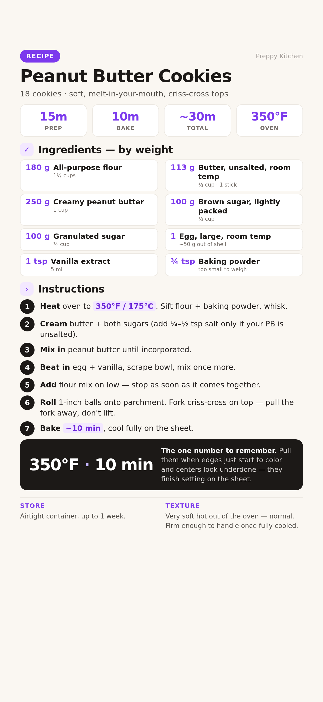

Soft, melt-in-your-mouth cookies with real fork criss-crosses. 18 cookies from one bowl of dough, about 30 minutes start to finish.
▶ John from Preppy Kitchen making this exact recipe — watch how pale the cookies come out of the oven and how the criss-cross is pressed.

📱 For your phone — tap to open the full-size card, then save it to Photos.
For 18 cookies. Grams lead; volume in the small line.
Weigh if you can. Set the bowl on the scale, tare between ingredients, go by grams. Too much flour is the #1 way these turn out dry.
Roll the dough straight away. Chilled dough bakes the same, so making it ahead is fine too.
Heat the oven to 350°F (175°C). Sift 180 g flour and ¾ tsp baking powder into a bowl and whisk them together.
What to expect: a uniform pale powder, no white specks of unblended baking powder.
Beat 113 g butter, 100 g brown sugar, and 100 g granulated sugar with the paddle until light and fluffy, 2–3 minutes. Add ¼–½ tsp salt here only if your peanut butter is unsalted.
What to expect: the mix lightens in color and looks whipped, not sandy.
Mix in 250 g creamy peanut butter until it's fully incorporated. Scrape the bowl — PB loves to hide under the paddle.
What to expect: one thick, uniform paste, no streaks.
Mix in 1 large egg and 1 tsp vanilla. Scrape the bowl down and mix once more so everything comes together evenly.
Watch for: the dough looking slightly curdled right after the egg — that's normal, it smooths out with the flour.
Add the flour mixture and beat on low just until incorporated.
Don't overmix. Extra beating once the flour is in develops gluten and makes the cookies tough instead of melt-in-your-mouth.
Roll dough into 1-inch balls and place them on a parchment-lined baking sheet. They barely spread, so 2 inches apart is plenty.
What to expect: about 18 balls; the dough is soft but holds its shape.
Press each ball flat with a fork, one direction then again at 90° for the classic crosshatch. Dip the fork in flour if it sticks. Pull the fork away sideways instead of lifting up — the marks stay crisp.
Why flatten at all: these cookies are dense and don't spread on their own. The fork press is what makes them bake evenly.
Bake at 350°F for about 10 minutes, until the edges are just starting to color. Then leave them on the hot sheet until completely cooled — they finish cooking and firm up from residual heat.
They will look underdone. That's correct. Pulling them when fully set in the oven makes them dry and hard once cooled. Moving them too early breaks them.
Too much flour — weigh it next time (180 g, not scooped cups). Also check you pulled them at the pale stage, not when fully browned.
Natural peanut butter that wasn't stirred in — the oil layer ran. Stir the jar fully, or use a stabilized brand.
The fork marks bake away if the dough is too warm or the press was too light. Press firmly and bake straight after shaping.
They were still setting. Wait until fully cooled on the sheet — hot PB cookies are extremely fragile.
You salted the batter and used salted peanut butter. Pick one or the other next batch.
Dip the fork in flour between presses, and pull sideways off the cookie rather than lifting.